Unde s-a mutat
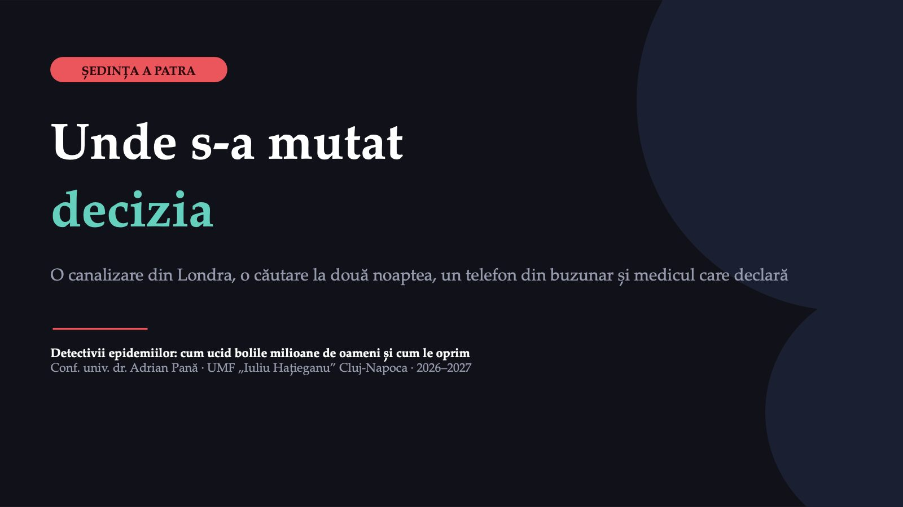
1 / 44Bine ați venit la a patra ședință, „Unde s-a mutat decizia”. Azi urmărim patru povești: o canalizare din Londra, o căutare la două noaptea, un telefon din buzunar și medicul care declară. Toate răspund la aceeași întrebare: cine află primul de o epidemie și cine hotărăște ce se face. Votăm pe Mentimeter, iar linkul este și în chat.
Dacă mâine ar începe o epidemie în Cluj, cine ar afla primul și cine ar hotărî ce se face?
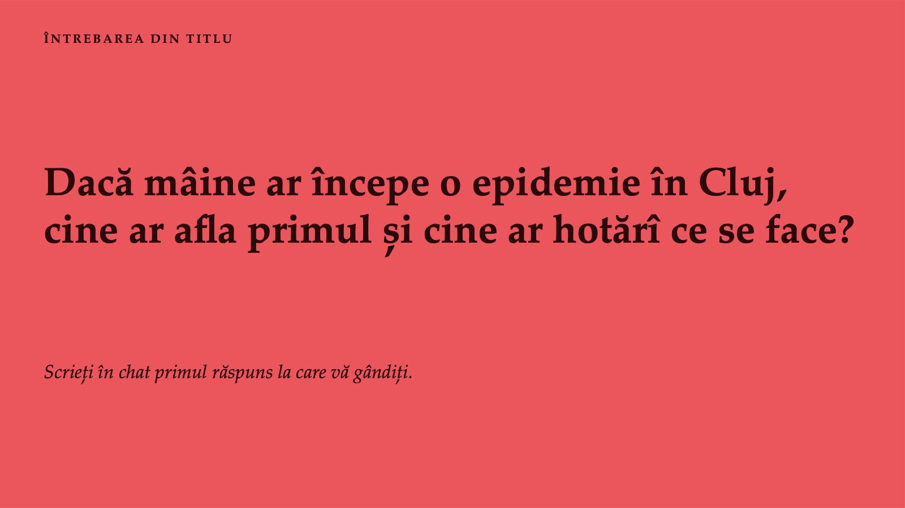
2 / 44Prima întrebare a ședinței este chiar titlul ei. Dacă mâine ar începe o epidemie în Cluj, cine ar afla primul? Și cine ar hotărî ce se face? Scrieți în chat primul răspuns care vă vine în minte, fără să căutați formularea perfectă. Păstrați-l: la sfârșitul ședinței îl puteți compara cu ce ați aflat.
O decizie care încăpea într-o singură mână
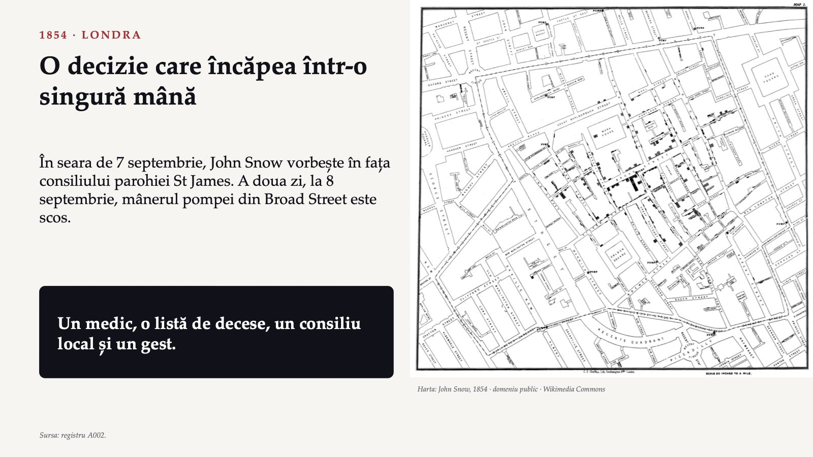
3 / 44În prima ședință ați văzut o decizie care încăpea într-o singură mână. În seara de 7 septembrie 1854, John Snow s-a prezentat în fața consiliului parohiei St James, iar a doua zi, la 8 septembrie, mânerul pompei din Broad Street a fost scos. Un medic, o listă de decese, un consiliu local și un gest. Semnalul, argumentul și accesul la cei care puteau hotărî erau în aceleași mâini. Harta de pe ecran este chiar harta lui Snow. Astăzi, aceeași întrebare are un răspuns mai complicat, iar diapozitivul următor vă propune un răspuns provizoriu, pe care restul ședinței îl verifică.
Trei părți, pe care restul ședinței le verifică
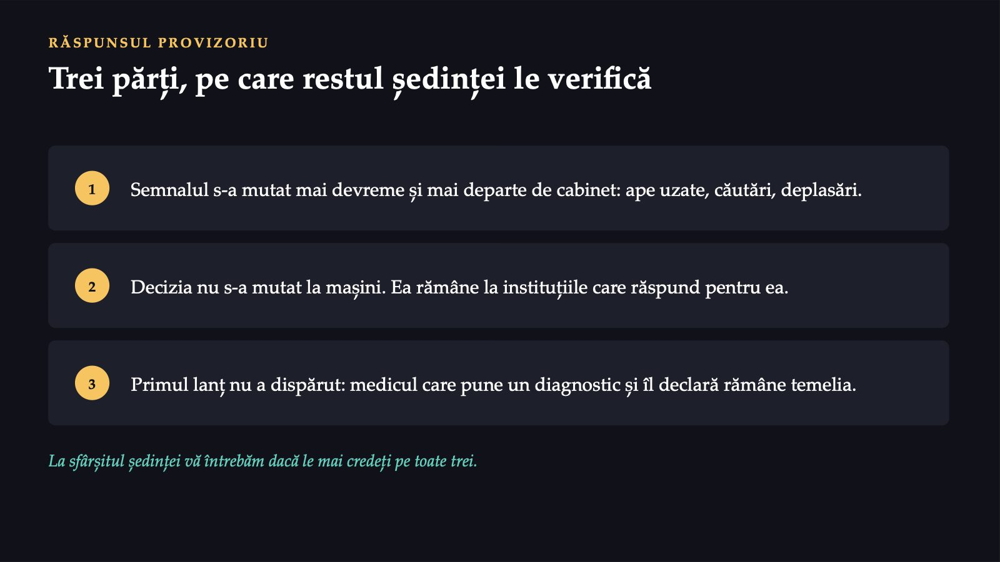
4 / 44Răspunsul provizoriu are trei părți. Prima: semnalul s-a mutat mai devreme și mai departe de cabinet. Uneori, primul semn al unei epidemii nu mai este un bolnav, ci o probă de ape uzate, o curbă de căutări pe internet sau o schimbare în felul în care se deplasează oamenii. A doua: decizia nu s-a mutat la mașini. Ea rămâne la instituțiile care răspund pentru ea: direcțiile de sănătate publică, ministerele, comitetele de experți. Mașinile produc semnale; oamenii hotărăsc ce fac cu ele. A treia: primul lanț nu a dispărut. Medicul care pune un diagnostic și îl declară rămâne temelia. Țineți minte cele trei părți: la sfârșit vă întrebăm, pe Mentimeter, dacă le mai credeți pe toate trei.
116
 5 / 44
5 / 44Prima poveste începe la Londra, în 2022. Cu câteva luni înaintea comunicatului din 10 august, în apele uzate de la stația de epurare Beckton, din estul Londrei, a fost găsit poliovirus de tip 2. Între 8 februarie și 5 iulie 2022, în 19 probe de ape uzate au fost identificate 116 izolate. Cele mai multe semănau cu virusul din vaccinul oral. Numai câteva aveau destule mutații ca să fie numite „poliovirus derivat din vaccin”. Acestea îngrijorau mai mult: un asemenea virus, scrie agenția, se comportă mai degrabă ca virusul „sălbatic” și poate, rareori, să producă paralizie la persoanele nevaccinate. Denumirea nu este un termen de reținut pentru evaluare; este doar numele virusului din această poveste.
„No cases of polio have been reported”
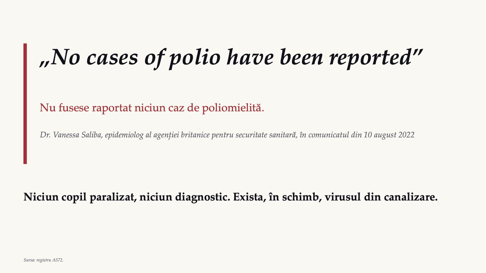
6 / 44Comunicatul agenției britanice pentru securitate sanitară, din 10 august 2022, o citează pe epidemiologa agenției, dr. Vanessa Saliba, cu o frază simplă: „No cases of polio have been reported”, adică nu fusese raportat niciun caz de poliomielită. Opriți-vă puțin asupra acestei fraze. Nu fusese raportat niciun copil paralizat, niciun diagnostic. Exista, în schimb, virusul din canalizare. Semnalul a venit, așadar, înaintea oricărui bolnav. Pe diapozitivul următor treceți voi de partea celor care trebuie să hotărască ce se face cu un asemenea semnal.
Un apel la Direcția de Sănătate Publică, într-o dimineață de vară
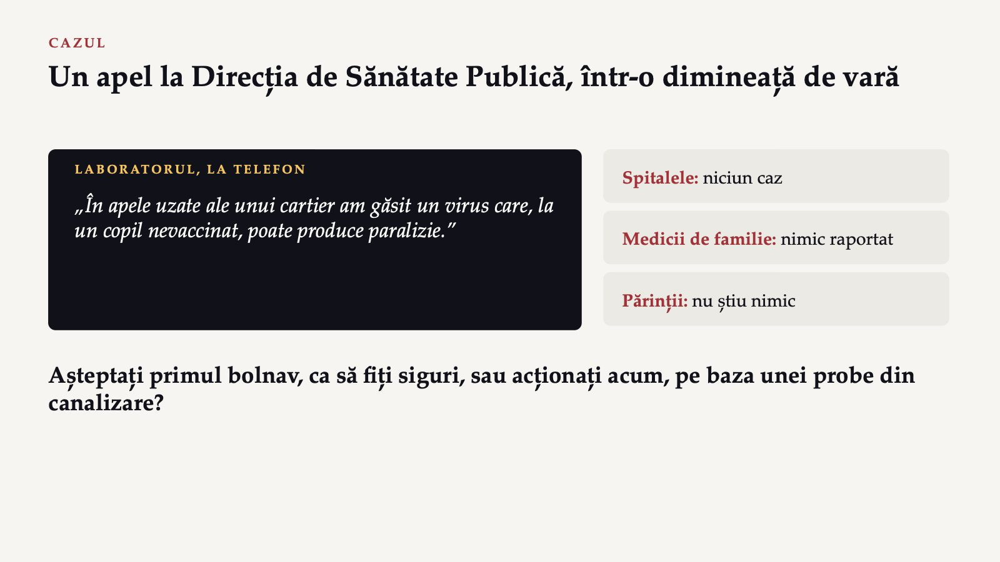
7 / 44Imaginați-vă că lucrați într-o direcție de sănătate publică. Este o dimineață de vară și laboratorul vă sună: în apele uzate ale unui cartier a fost găsit un virus care, la un copil nevaccinat, poate produce paralizie. Spitalele nu au niciun caz. Medicii de familie nu au raportat nimic. Părinții nu știu nimic. Aveți, deci, o singură informație: o probă din canalizare. Întrebarea este simplă de pus și grea de hotărât: așteptați primul bolnav, ca să fiți siguri, sau acționați acum, pe baza probei? Gândiți-vă ce ar însemna fiecare variantă pentru copiii din acel cartier. Pe diapozitivul următor votați.
Dacă ați conduce direcția de sănătate publică, ce ați face?
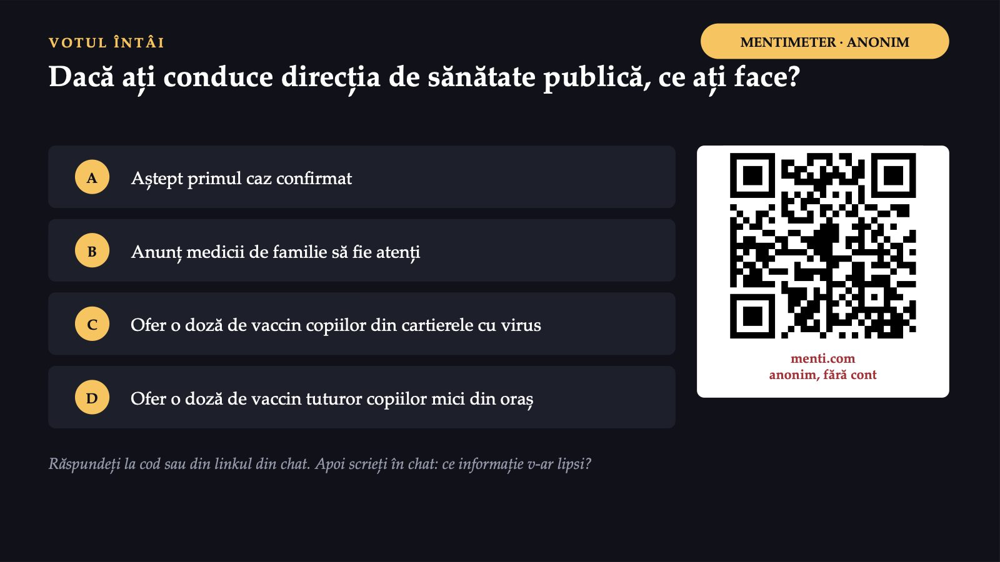
8 / 44Dacă ați conduce direcția de sănătate publică, ce ați face? Votul este anonim, pe Mentimeter, la codul de pe ecran sau din linkul din chat. După vot, scrieți în chat, într-o frază, ce informație v-ar lipsi ca să hotărâți. Citim câteva dintre răspunsurile voastre înainte să vedem ce s-a hotărât la Londra.
A patra variantă, începută cu a treia
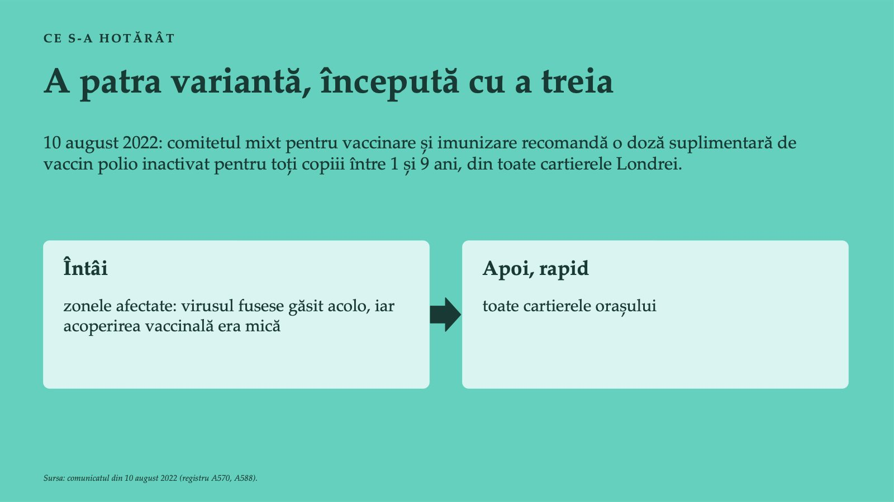
9 / 44Să vedem ce ați votat și ce s-a hotărât. Decizia britanică a fost a patra variantă, începută cu a treia. Comitetul mixt pentru vaccinare și imunizare a recomandat ca toți copiii între 1 și 9 ani, din toate cartierele Londrei, să primească o doză suplimentară de vaccin polio inactivat; comunicatul este din 10 august 2022. Programul urma să înceapă cu zonele afectate, unde fusese găsit virusul și acoperirea vaccinală era mică, și să continue rapid în toate cartierele. Cine a votat a treia variantă a ales, deci, începutul programului; cine a votat a patra a ales întregul. Rămâne întrebarea de pe diapozitivul următor: de ce o decizie atât de largă, fără niciun bolnav?
De ce o decizie atât de largă, fără niciun bolnav?
![TREI ARGUMENTE De ce o decizie atât de largă, fără niciun bolnav? Virusul circula Cantitatea de virus și diversitatea izolatelor: transmiterea trecuse dincolo de câțiva oameni. Zone slab vaccinate Virusul circula în zone cu unele dintre cele mai mici acoperiri vaccinale din oraș. Protecția Protecție ridicată față de paralizie și mai puțină răspândire. Canalizarea a devenit o hartă a orașului: 8 puncte de recoltare, alte 15 din august, 10–15 în restul țării. Sursa: comunicatul din 10 august 2022 (registru A587, A572, A573).](diapozitive/C04/010.jpg) 10 / 44
10 / 44Comunicatul aduce trei argumente. Primul: cantitatea de virus găsită și diversitatea genetică mare a izolatelor arătau că transmiterea trecuse dincolo de un cerc restrâns de câțiva oameni. Al doilea: zonele în care virusul se transmitea aveau unele dintre cele mai mici acoperiri vaccinale din oraș. Al treilea: doza suplimentară urma să asigure o protecție ridicată față de paralizie și să ajute la reducerea răspândirii. În lectura acestui curs, a aștepta primul caz ar fi însemnat a aștepta exact evenimentul pe care vaccinarea voia să-l împiedice. Agenția nu s-a oprit la vaccinare: recolta probe din 8 puncte ale canalizării, alte 15 urmau să înceapă la jumătatea lunii august, iar în restul țării urmau 10–15 puncte. Canalizarea a devenit o hartă a orașului, la fel cum adresele morților îi arătaseră lui Snow pompa.
Supravegherea apelor uzate
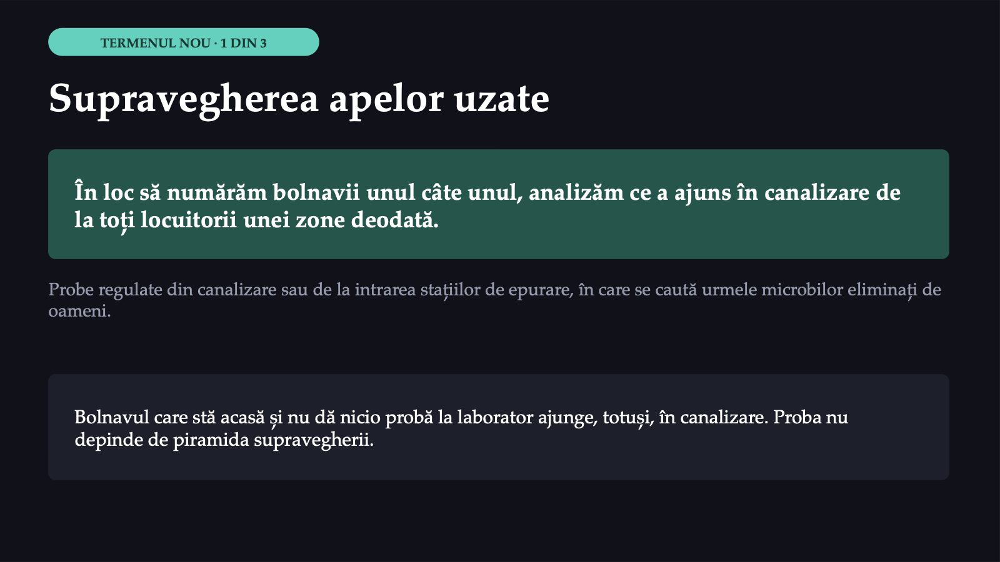
11 / 44Primul termen nou: supravegherea apelor uzate. Înseamnă recoltarea regulată de probe din canalizare sau de la intrarea stațiilor de epurare și căutarea în ele a urmelor unor microbi, adică material genetic sau virusuri întregi, eliminați de oameni prin scaun, urină sau secreții. În limbaj obișnuit: în loc să numărăm bolnavii unul câte unul, analizăm ce a ajuns în canalizare de la toți locuitorii unei zone deodată. Gândiți-vă la căminul vostru. O stație de epurare primește apa de la zeci de mii de oameni: de la cei care s-au dus la medic și de la cei care nu s-au dus. De aceea proba nu depinde de piramida supravegherii despre care am vorbit data trecută. Bolnavul care stă acasă ajunge, totuși, în canalizare.
Trei limite, spuse de la început
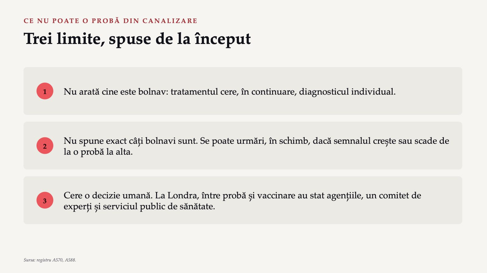
12 / 44Supravegherea are și limite, pe care le spunem de la început. Prima: nu arată cine este bolnav. Proba spune că virusul a trecut prin canalizarea unei zone, nu ce persoană îl poartă, iar tratamentul cere, în continuare, diagnosticul individual. A doua: nu spune exact câți bolnavi sunt. Cantitatea de virus din apă depinde de factori pe care proba nu îi arată, așa că din ea nu se poate citi direct numărul bolnavilor. Se poate urmări, în schimb, dacă semnalul crește sau scade de la o probă la alta. A treia: cere o decizie umană. O probă pozitivă nu vaccinează pe nimeni. La Londra, între probă și vaccinare au stat agențiile care au recoltat și analizat probele, un comitet de experți și serviciul public de sănătate.
Cu câte zile înaintea altor surse vine semnalul?
 13 / 44
13 / 44Cât de devreme vine semnalul? În primul val al pandemiei de COVID-19, cercetătorii de la Universitatea Yale au recoltat zilnic, între 19 martie și 1 iunie 2020, nămol primar, adică partea solidă care se depune la intrarea în stația de epurare, de la stația care deservea circa 200 000 de locuitori ai zonei New Haven. Citiți cu atenție cele trei comparații, pentru că spun lucruri diferite. Față de testele numărate după data recoltării, nămolul a fost înainte cu 0–2 zile, deci aproape nimic. Față de internări, cu 1–4 zile. Față de testele numărate după data raportării, cu 6–8 zile. Concluzia nu este că apele uzate „văd viitorul”. Ele ocolesc întârzierile: drumul bolnavului până la medic, al probei până la laborator, al rezultatului până în raport.
Unde ar fi mai utilă supravegherea apelor uzate?
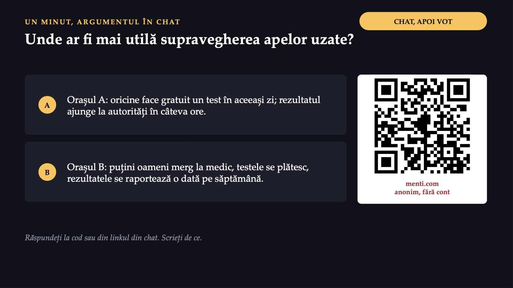
14 / 44În orașul A, oricine face gratuit un test în aceeași zi, iar rezultatul ajunge la autorități în câteva ore. În orașul B, puțini oameni merg la medic, testele se plătesc, iar rezultatele se raportează o dată pe săptămână. Unde ar fi mai utilă supravegherea apelor uzate? Scrieți în chat argumentul într-o frază, apoi votați pe Mentimeter.
Orașul B
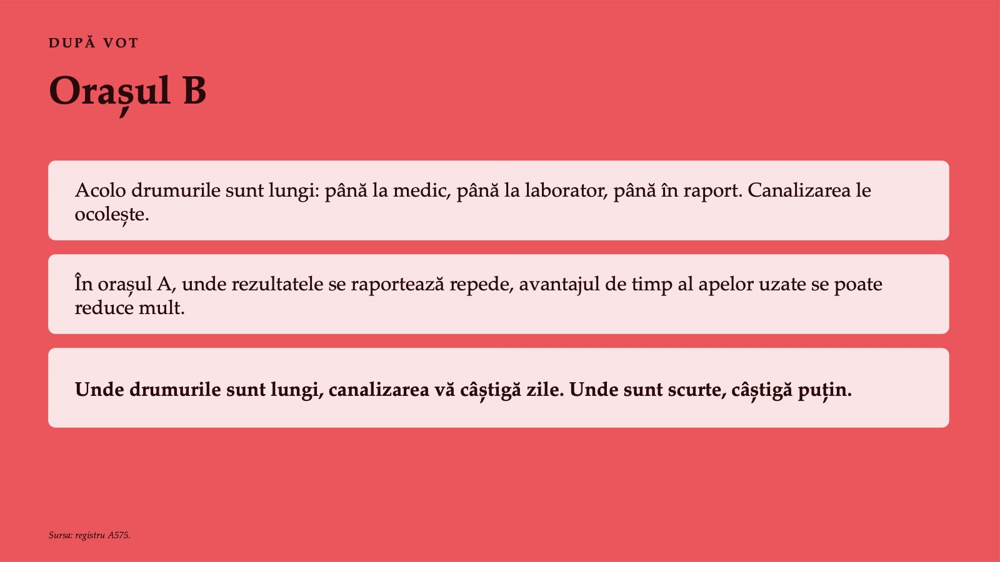
15 / 44Să vedem ce ați votat. Răspunsul care se sprijină pe studiul de la New Haven este orașul B. Acolo drumurile sunt lungi: până la medic, până la laborator, până în raport, iar canalizarea le ocolește. Autorii studiului adaugă că, acolo unde rezultatele testelor sunt raportate repede, avantajul de timp al apelor uzate se poate reduce mult. Aceasta ar fi situația orașului A. Regula de reținut este simplă: unde drumurile sunt lungi, canalizarea vă câștigă zile; unde sunt scurte, câștigă puțin. Comparați argumentul pe care l-ați scris în chat cu această regulă.
Directiva (UE) 2024/3019, articolul 17
![DE LA EXPERIMENT LA OBLIGAȚIE Directiva (UE) 2024/3019, articolul 17 Fiecare stat membru: autoritățile de sănătate publică și cele de epurare urmăresc în apele uzate agenți precum SARS-CoV-2, virusul poliomielitic, virusul gripei și agenții patogeni emergenți. Un sistem de „cooperare și coordonare”, cu rezultatele comunicate la timp autorităților de sănătate publică. Transpunerea: până la 31 iulie 2027 Articolul se oprește aici: nu spune ce fac autoritățile mai departe. Sursa: Directiva (UE) 2024/3019 privind apele uzate urbane (registru A121, A595).](diapozitive/C04/016.jpg) 16 / 44
16 / 44Ceea ce la Londra a fost munca unor agenții, iar la New Haven studiul unor cercetători, devine, în Uniunea Europeană, o obligație. Directiva (UE) 2024/3019 privind apele uzate urbane cere, la articolul 17, fiecărui stat membru un sistem prin care autoritățile de sănătate publică și cele de epurare urmăresc în apele uzate agenți precum virusul SARS-CoV-2, virusul poliomielitic, virusul gripei și agenții patogeni emergenți. Este un sistem de „cooperare și coordonare”, cu rezultatele comunicate la timp autorităților de sănătate publică. Transpunerea trebuie făcută până la 31 iulie 2027. Potrivit directivei, până la sfârșitul facultății ar trebui să lucrați într-un sistem în care o parte din primele semnale nu mai vin din cabinete. Articolul se oprește însă aici: nu spune ce fac autoritățile mai departe. Decizia rămâne, și aici, la oameni.
Un semnal din canalizare nu are nume, vârstă sau adresă.
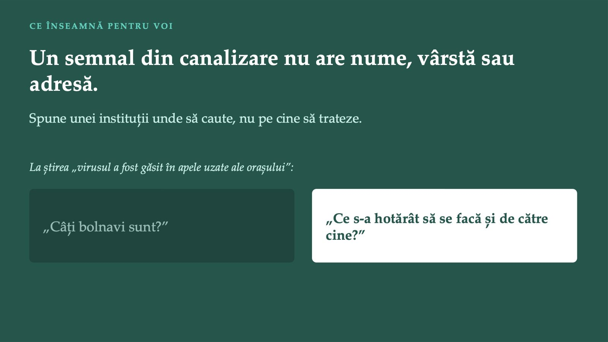
17 / 44Ce înseamnă toate acestea pentru voi? Un semnal din canalizare nu are nume, vârstă sau adresă. El spune unei instituții unde să caute, nu pe cine să trateze. Când veți vedea vreodată o știre de tipul „virusul a fost găsit în apele uzate ale orașului”, prima întrebare la care vă gândiți este, probabil, „câți bolnavi sunt?”. La ea proba nu poate răspunde, așa cum ați văzut la limitele ei. Întrebarea utilă este alta: „ce s-a hotărât să se facă și de către cine?”. Cu ea se încheie prima poveste. A doua începe la ora două noaptea, într-un cămin.
Februarie, sesiunea, o colegă cu febră
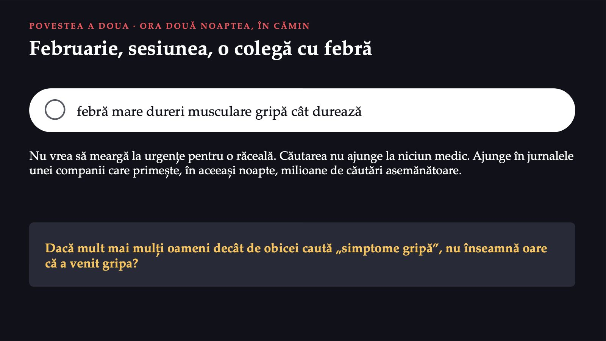
18 / 44Este februarie, sesiunea. O colegă de cameră are febră, o durere de cap care nu trece și o tuse seacă. Nu vrea să meargă în unitatea de primiri urgențe (UPU) pentru o răceală. Ia telefonul și scrie în motorul de căutare: „febră mare dureri musculare gripă cât durează”. Căutarea nu ajunge la niciun medic. Nimeni nu o declară, nimeni nu o numără ca bolnavă. Dar căutarea a ajuns undeva: în jurnalele unei companii care primește, în aceeași noapte, milioane de căutări asemănătoare. Dacă într-o săptămână mult mai mulți oameni decât de obicei caută „simptome gripă”, nu înseamnă oare că a venit gripa? Exact această idee a stat la baza unui proiect care, timp de câțiva ani, a fost exemplul preferat al celor care credeau că datele de pe internet vor înlocui supravegherea clasică.
100
 19 / 44
19 / 44Proiectul se numea Google Flu Trends. Estima, săptămânal, proporția consultațiilor pentru boală de tip gripal din Statele Unite, pornind de la căutările pe internet. Fusese construit ca să prezică rapoartele Centrelor pentru Controlul și Prevenirea Bolilor (CDC), care apar cu întârziere. Lazer și colegii lui povestesc, într-un articol din 2014, că în februarie 2013 sistemul estima de peste două ori mai multă gripă decât CDC. Nu a fost o greșeală de o săptămână. Între august 2011 și septembrie 2013, sistemul a văzut prea multă gripă în 100 din 108 săptămâni, iar în sezonul 2011–2012 a depășit nivelul real cu peste 50%. Versiunea inițială ratase complet pandemia de gripă din 2009, venită în afara sezonului obișnuit. Autorii îl descriu drept „în parte detector de gripă, în parte detector de iarnă”.
De ce a văzut sistemul mai multă gripă decât exista?
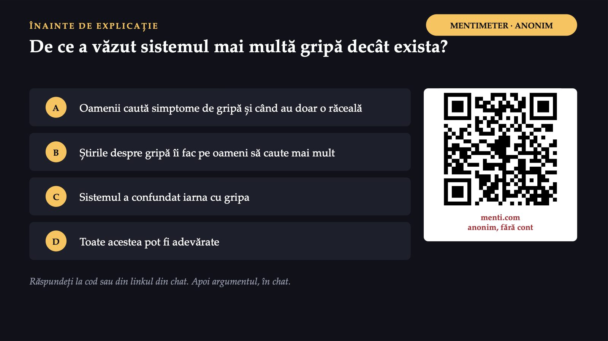
20 / 44Înainte de explicație, votați: de ce credeți că un sistem construit din milioane de căutări a văzut mai multă gripă decât exista? Votul este anonim, pe Mentimeter, la cod sau din linkul din chat. După vot, scrieți în chat argumentul vostru într-o frază. Dacă vedeți în chat un coleg care a votat altfel, răspundeți-i lui.
1 152
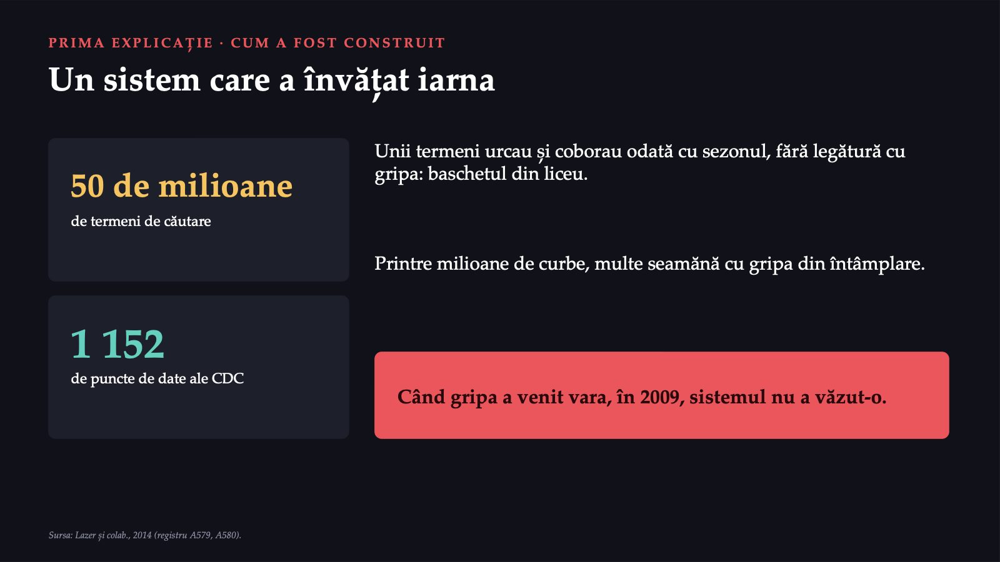
21 / 44Lazer și colegii lui dau două explicații. Prima privește felul în care a fost construit sistemul. Versiunea inițială a căutat, între 50 de milioane de termeni de căutare, pe cei care se potriveau cel mai bine cu 1 152 de puncte de date ale CDC. Dezvoltatorii au fost nevoiți să elimine termeni care urcau și coborau odată cu sezonul gripal, dar nu aveau nicio legătură cu gripa, de exemplu cei despre baschetul din liceu. Gândiți-vă la ce înseamnă asta. Dacă aveți milioane de curbe și le căutați pe cele care seamănă cu curba gripei, veți găsi multe care seamănă doar din întâmplare: tot ce crește iarna și scade primăvara. Un asemenea sistem învață iarna, nu gripa. Când gripa a venit vara, în 2009, nu a văzut-o.
86
 22 / 44
22 / 44A doua explicație privește chiar motorul de căutare. Compania își testa și își îmbunătățea permanent motorul: numai în iunie și iulie 2012, blogul ei oficial a anunțat 86 de schimbări. Din iunie 2011 motorul sugera căutări suplimentare, iar din februarie 2012 propunea diagnostice posibile pentru simptome ca febra și tusea. Căutările despre deosebirea dintre răceală și gripă urmăresc îndeaproape erorile sistemului. Fiecare schimbare modifica ceea ce caută oamenii și, odată cu aceasta, datele din care se calcula gripa. Panica alimentată de presă poate să fi contat, scriu autorii, dar nu explică peste 2 ani de erori. Autorii presupun că schimbările susțineau modelul de afaceri al companiei. Datele nu veneau, așadar, de la un instrument de măsură, ci de la un produs comercial.
Toate acestea pot fi adevărate
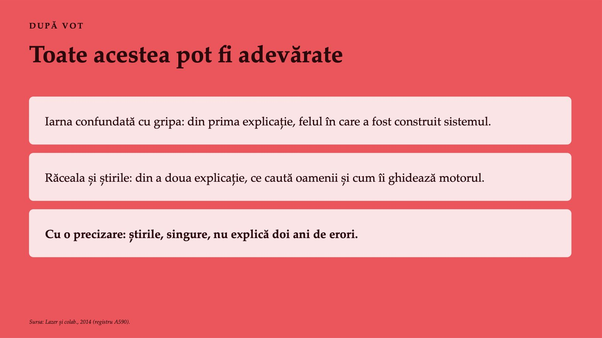
23 / 44Să vedem ce ați votat. Fiecare variantă are o parte de adevăr. Iarna confundată cu gripa vine din prima explicație, felul în care a fost construit sistemul. Răceala și știrile vin din a doua explicație: ce caută oamenii și cum îi ghidează motorul de căutare. De aceea varianta cea mai apropiată de surse este ultima, „toate acestea pot fi adevărate”, cu o precizare: știrile, singure, nu explică doi ani de erori. Uitați-vă în chat la argumentele scrise înainte de explicație și vedeți care dintre ele se potrivesc cu una dintre cele două explicații.
Epidemiologia digitală
 24 / 44
24 / 44Al doilea termen nou: epidemiologia digitală. În limbaj obișnuit, înseamnă urmele pe care le lăsăm zilnic, folosite ca să înțelegem cum se răspândește o boală. Marcel Salathé propune, în 2018, două definiții. Cea largă: orice epidemiologie care folosește date digitale. Cea îngustă, pe care el o găsește mai atrăgătoare și mai provocatoare: epidemiologia care folosește date care nu au fost produse cu scopul principal de a face epidemiologie, cum sunt căutările, mesajele publice, datele telefoanelor și achizițiile. De aici vin și puterea, și slăbiciunea lor. Sunt multe, sunt rapide și ajung și la oamenii care nu merg la medic. Dar nimeni nu le-a proiectat ca să măsoare ceva anume. În lectura acestui curs, apele uzate nu intră aici: sunt un instrument proiectat pentru sănătate.
Nu „nu vă încredeți în internet”
 25 / 44
25 / 44Ar fi ușor să trageți concluzia că datele de pe internet nu sunt bune de nimic. Autorii articolului spun altceva. Ei numesc greșeala de fond „big data hubris”, adică presupunerea, adesea nespusă, că datele de volum mare pot înlocui colectarea și analiza tradițională a datelor, în loc să le completeze. Când au combinat Google Flu Trends cu datele CDC, chiar întârziate, eroarea a scăzut mult față de fiecare sursă luată separat. Salathé adaugă, în 2018, o problemă mai mare decât erorile: datele erau private, așa că nimeni din afara companiei nu putea reproduce și cerceta algoritmul. În lectura acestui curs, este aceeași lecție ca la apele uzate: semnalul nou ajută când se adaugă lanțului clasic, nu când pretinde că îl înlocuiește.
When Google got flu wrong
 26 / 44
26 / 44Acum un titlu real din presa științifică, din revista Nature, februarie 2013: „When Google got flu wrong”, adică „Când Google a greșit cu gripa”. Subtitlul spune că epidemia din Statele Unite derutează o metodă de vârf de urmărire a gripei pe internet. Folosim numai titlul și subtitlul public. Scrieți în chat, câte o frază, la cele trei întrebări de pe ecran: din ce date a fost calculată estimarea, cu ce a fost comparată, ce ar fi trebuit să existe ca s-o credeți. Apoi votăm.
„When Google got flu wrong”: l-ați crede?
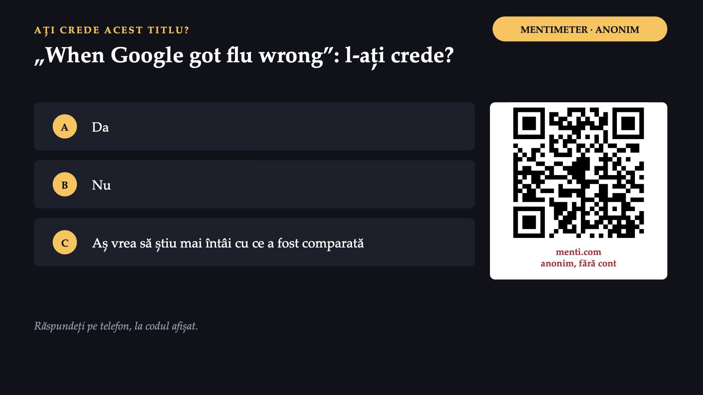
27 / 44Acum votul: ați crede acest titlu? Da, nu sau ați vrea să știți mai întâi cu ce a fost comparată estimarea. Votul este anonim, pe Mentimeter, la cod sau din linkul din chat. Aici contează mai puțin varianta aleasă și mai mult întrebările pe care vi le-ați pus înainte de a vota.
Zece minute
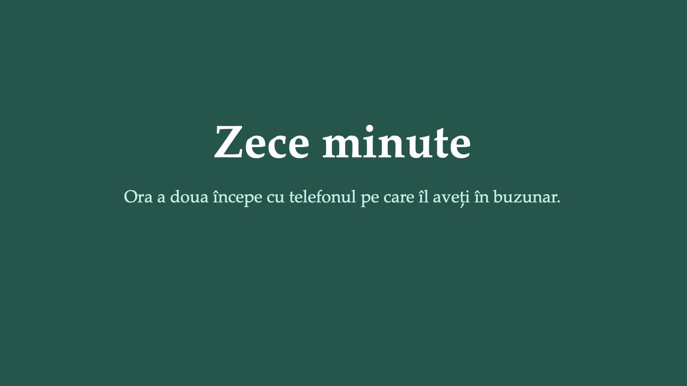
28 / 44Ne revedem în zece minute. Rămâneți conectați; microfonul și camera pot rămâne închise. Ora a doua începe cu telefonul pe care îl aveți în buzunar și cu o întrebare simplă din primul an al pandemiei.
Chiar stau oamenii acasă?
![POVESTEA A TREIA · PRIMUL AN AL PANDEMIEI Chiar stau oamenii acasă? comerț și recreere alimentare și farmacii parcuri stații de transport locuri de muncă locuințe Rapoartele de mobilitate Google: cum s-au schimbat deplasările, pe zone și pe categorii de locuri. Neactualizate din 15 octombrie 2022; datele istorice rămân publice. Datele veneau de la cei care activaseră „istoricul locațiilor”, dezactivat implicit. Nimeni nu le crease pentru sănătate. Sursa: pagina rapoartelor de mobilitate (registru A583, A593, A576).](diapozitive/C04/029.jpg) 29 / 44
29 / 44Primul an al pandemiei. Școlile se închid, restaurantele se închid, oamenii primesc recomandarea să stea acasă. Un ministru, un primar sau o direcție de sănătate publică vrea să știe un lucru simplu: chiar stau oamenii acasă? Compania Google a publicat, în pandemie, rapoarte de mobilitate. Arătau cum s-au schimbat în timp deplasările, pe zone geografice și pe categoriile de locuri de pe ecran: comerț și recreere, alimentare și farmacii, parcuri, stații de transport, locuri de muncă și locuințe. Datele nu veneau dintr-un sondaj, ci de la utilizatorii care activaseră setarea „istoricul locațiilor”, dezactivată implicit. Rapoartele nu mai sunt actualizate din 15 octombrie 2022, iar datele istorice au rămas publice. Erau, în sensul definiției de mai devreme, date de epidemiologie digitală: nimeni nu le crease pentru sănătate.
Date agregate și anonimizate
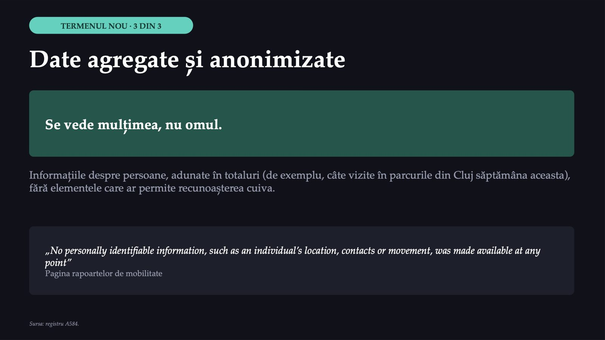
30 / 44Al treilea termen nou: date agregate și anonimizate. Sunt date în care informațiile despre persoane au fost adunate în totaluri, de exemplu câte vizite în parcurile din Cluj săptămâna aceasta, față de o săptămână obișnuită, și din care au fost scoase elementele care ar permite recunoașterea unei persoane. În limbaj obișnuit: se vede mulțimea, nu omul. Compania scrie pe pagina rapoartelor că acestea au fost create din seturi de date agregate și anonimizate. Pagina adaugă fraza de pe ecran: nicio informație care să identifice o persoană, cum ar fi locul în care se află, contactele sau deplasările ei, nu a fost pusă la dispoziție în niciun moment.
Diferența dintre o mulțime și un om
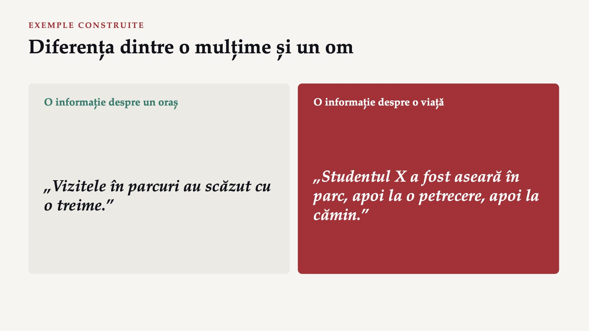
31 / 44Diferența dintre o mulțime și un om este tot ce contează aici. Ambele exemple de pe ecran sunt construite pentru ședință. „Vizitele în parcuri au scăzut cu o treime” este o informație despre un oraș: nu spune nimic despre niciunul dintre voi. „Studentul X a fost aseară în parc, apoi la o petrecere, apoi la cămin” este o informație despre o viață. Pentru a ști dacă oamenii stau acasă ajung totalurile pe regiune; nu este nevoie de traseul fiecăruia. Păstrate pe persoane, aceleași deplasări spun unde a fost fiecare. Pe diapozitivul următor, această diferență devine o convorbire telefonică.
Ancheta epidemiologică, la telefon
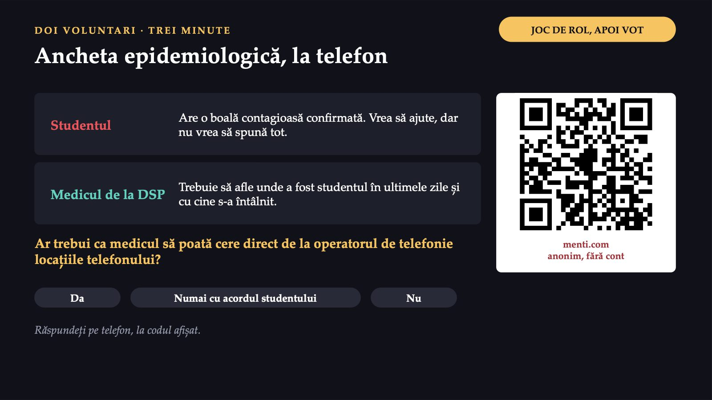
32 / 44Un joc de rol: ancheta epidemiologică, la telefon. Doi voluntari, cu reacția „mână ridicată” din Teams, apoi cu microfonul deschis. Unul este un student cu o boală contagioasă confirmată, care vrea să ajute, dar nu vrea să spună tot. Celălalt este medicul de la direcția de sănătate publică. Apoi votăm toți pe Mentimeter.
Nu există o soluție simplă, dar există întrebări de pus
![VIAȚA PRIVATĂ ȘI SĂNĂTATEA TUTUROR Nu există o soluție simplă, dar există întrebări de pus Salathé: interesul colectiv intră în conflict cu dorința fiecăruia de a-și proteja viața privată. Cu ce scop? Un scop declarat dinainte, nu „poate ne folosesc”. Câte date? Ajung totalurile pe regiune, nu traseul fiecăruia. Cine le vede? O instituție cu obligația secretului sau oricine le cumpără? Până când? Un sistem de urgență fără sfârșit nu mai este de urgență. Sursa: Salathé, 2018; pagina rapoartelor de mobilitate (registru A577, A583, A584).](diapozitive/C04/033.jpg) 33 / 44
33 / 44Jocul de rol nu este o invenție. Ancheta epidemiologică cere informații personale: la Oswego, în primul laborator, chestionarul întreba cine ce a mâncat la cină. Diferența de azi este că o mare parte din aceste informații există deja, înregistrate automat, în telefonul vostru. Salathé descrie limpede tensiunea: interesul colectiv ca datele să fie accesibile intră în conflict cu dorința, de înțeles, a celor mai mulți oameni de a-și proteja viața privată, iar pentru acest conflict nu există o soluție simplă. Există însă patru întrebări de pus oricărei folosiri a datelor personale pentru sănătate: cu ce scop, câte date, cine le vede și până când. Rapoartele de mobilitate, de exemplu, au avut o dată de încheiere. Cele patru întrebări vă vor folosi în dezbaterea care urmează.
„Într-o epidemie gravă, autoritatea de sănătate publică ar trebui să poată folosi datele de localizare ale telefoanelor, fără acordul fiecărei persoane.”
34 / 44Urmează dezbaterea. Moțiunea este pe ecran: „Într-o epidemie gravă, autoritatea de sănătate publică ar trebui să poată folosi datele de localizare ale telefoanelor, fără acordul fiecărei persoane.” Întâi votul, pe Mentimeter, la cod sau din linkul din chat: pentru sau împotrivă, fiecare după ce crede acum. Același vot îl repetăm după dezbatere.
Luna nașterii vă alege tabăra
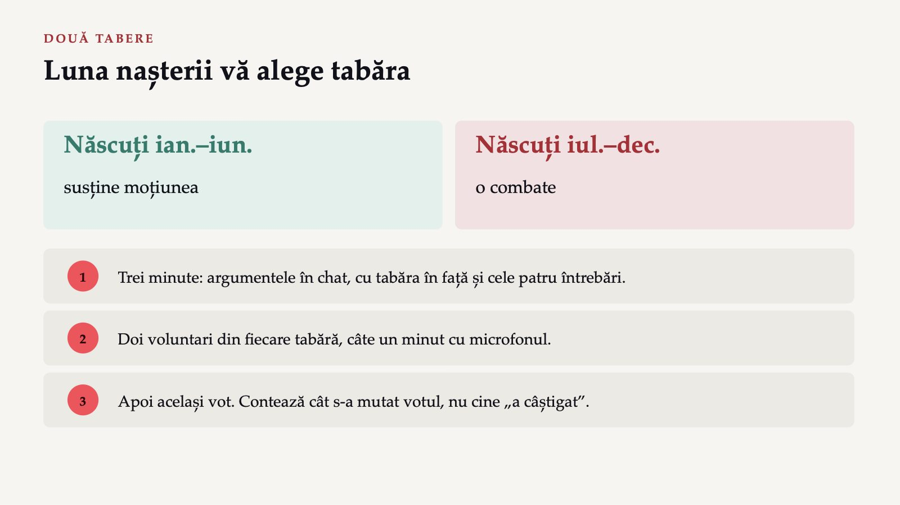
35 / 44Vă împărțim în două tabere după luna nașterii, indiferent de votul fiecăruia. Cei născuți între ianuarie și iunie susțin moțiunea; cei născuți între iulie și decembrie o combat. Fiecare tabără scrie argumentele în chat, cu „Pentru” sau „Împotrivă” în față, folosind cele patru întrebări: cu ce scop, câte date, cine le vede, până când. Apoi câte doi voluntari din fiecare tabără, cu reacția „mână ridicată” din Teams, vorbesc câte un minut, cu microfonul deschis. La sfârșit, același vot. Contează cât s-a mutat votul, nu cine „a câștigat”.
„Într-o epidemie gravă, autoritatea de sănătate publică ar trebui să poată folosi datele de localizare ale telefoanelor, fără acordul fiecărei persoane.”
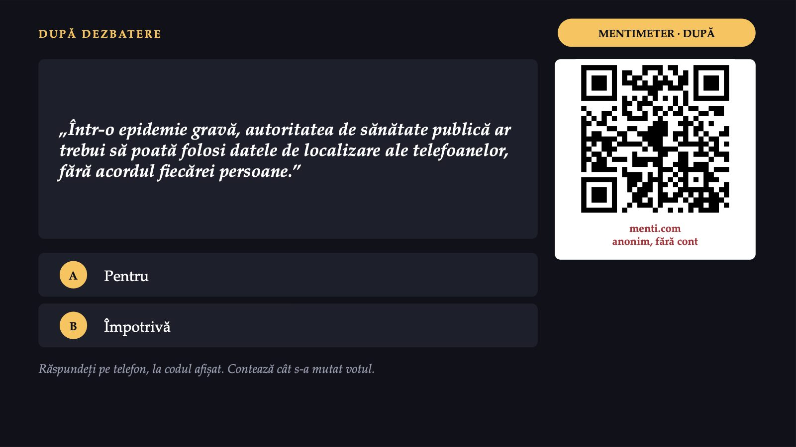
36 / 44Același vot, după dezbatere, pe Mentimeter, la cod sau din linkul din chat. Votați după ce credeți acum, nu după tabăra în care ați fost. Ne uităm împreună cât s-a mutat votul față de cel dinaintea dezbaterii. Nu căutăm un câștigător; ne interesează cât v-au mișcat argumentele.
Ce nu spun semnalele noi
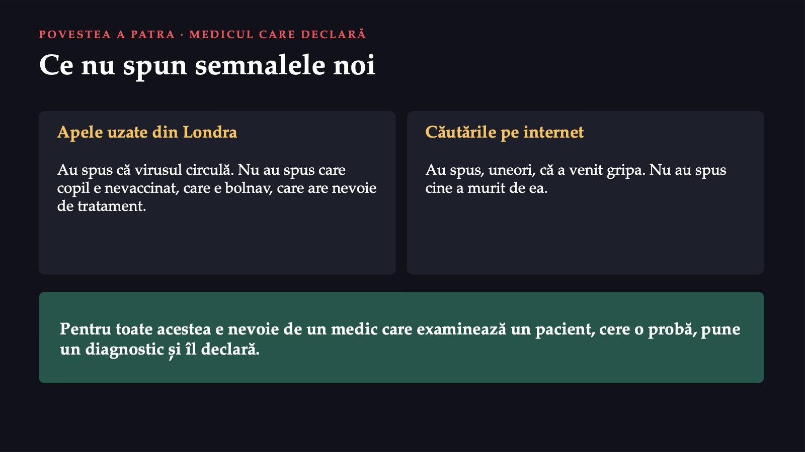
37 / 44Revenim la cele trei părți ale răspunsului de la începutul ședinței. Primele două le-ați văzut: semnalul s-a mutat în canalizare și în telefoane, iar decizia a rămas la instituții. Rămâne a treia: primul lanț nu a dispărut. Apele uzate din Londra au spus că virusul poliomielitic circulă. Nu au spus care copil e nevaccinat, care e bolnav, care are nevoie de tratament. Căutările pe internet au spus, uneori, că a venit gripa. Nu au spus cine a murit de ea. Pentru toate acestea este nevoie de un medic care examinează un pacient, cere o probă, pune un diagnostic și îl declară. Aceasta este a patra poveste.
Fișa de declarare: intrarea în sistem
 38 / 44
38 / 44Data trecută ați văzut piramida supravegherii: între bolnavii reali și cifra oficială stau treptele mersului la medic, ale probei, ale testului de laborator și ale raportării. Supravegherea apelor uzate ocolește primele trepte; dar fără ultimele, nimeni nu ar ști ce boală este, cât de gravă este și pe cine lovește. În România, datele despre bolile transmisibile se colectează și se raportează după o metodologie aprobată prin Hotărârea nr. 657/2022. Fișa pe care o completează medicul când pune un diagnostic de boală cu declarare obligatorie este, deci, intrarea în sistemul de supraveghere. Dacă și cum ajung semnalele noi în același sistem, în România, nu s-a verificat.
Al treilea student cu icter, din același cămin
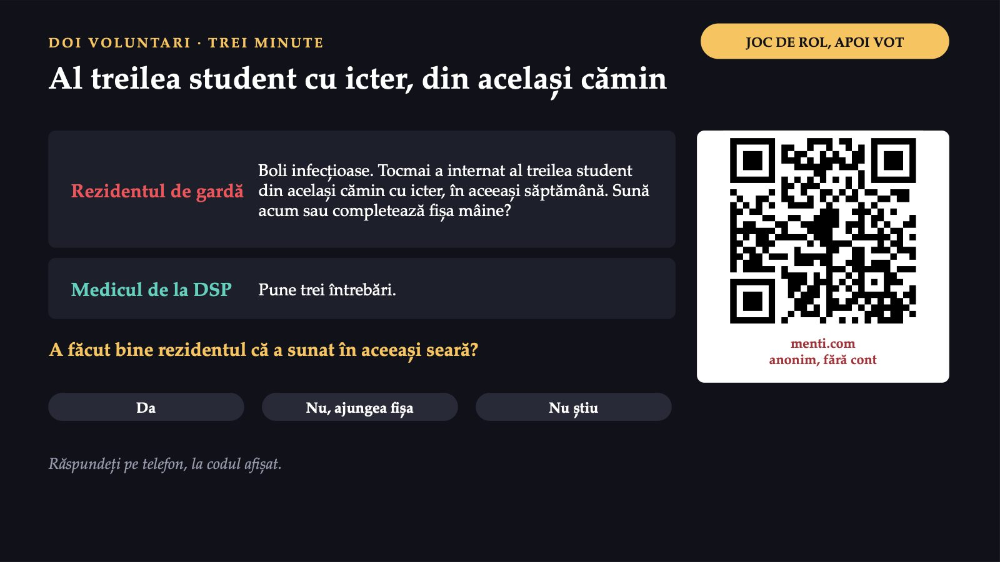
39 / 44Al doilea joc de rol, tot cu doi voluntari, prin reacția „mână ridicată” din Teams. Unul este rezidentul de gardă la boli infecțioase, care a internat al treilea student cu icter din același cămin: sună acum sau completează fișa mâine? Celălalt este medicul de la direcția de sănătate publică. Apoi votăm toți pe Mentimeter.
De la un singur om la un lanț
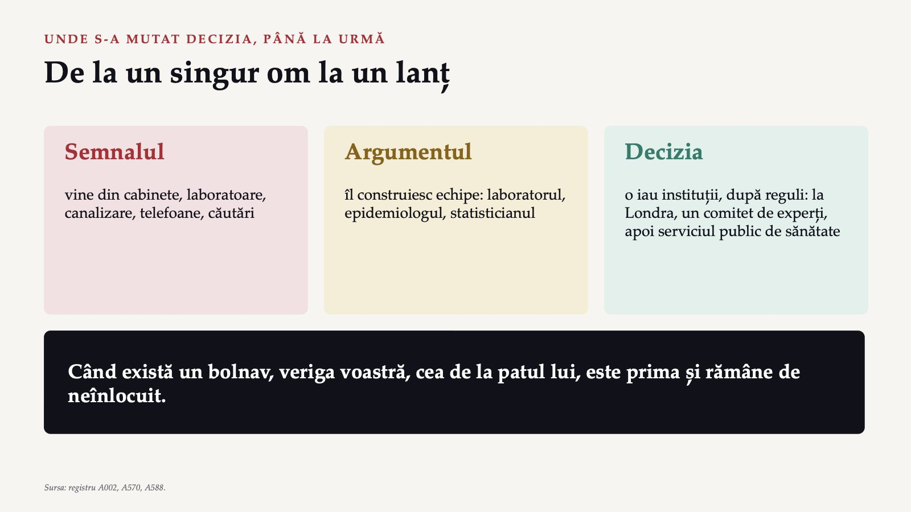
40 / 44Întoarceți-vă la întrebarea din titlu. În 1854, un medic avea și semnalul, și argumentul, și accesul la cei care puteau scoate mânerul pompei. Astăzi aceste trei lucruri s-au despărțit. Semnalul vine din mai multe locuri decât oricând: cabinete, laboratoare, canalizare, telefoane, căutări. Argumentul îl construiesc echipe: laboratorul care secvențiază virusul, epidemiologul care pune curbele alături, statisticianul care verifică dacă potrivirea nu este întâmplătoare. Decizia o iau instituții, după reguli: la Londra, un comitet de experți a recomandat, iar serviciul public de sănătate urma să ofere doza. Decizia s-a mutat, așadar, de la un singur om la un lanț. La Londra, ea s-a luat înaintea oricărui bolnav raportat. Când există un bolnav, însă, veriga voastră, cea de la patul lui, este prima și rămâne de neînlocuit.
Credeți în continuare toate cele trei părți ale răspunsului?
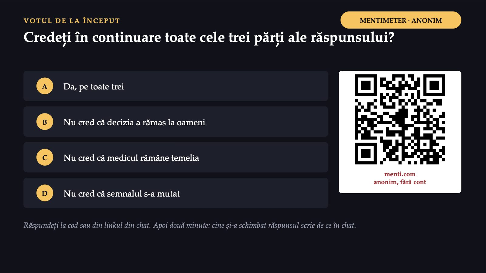
41 / 44Votul de la începutul ședinței: credeți în continuare toate cele trei părți ale răspunsului provizoriu? Votați pe Mentimeter, la cod sau din linkul din chat. Apoi, cine și-a schimbat răspunsul scrie în chat, într-o frază, de ce. Dacă ați votat altfel decât un coleg care a scris deja, răspundeți-i direct lui.
Întrebări din cele patru povești de azi
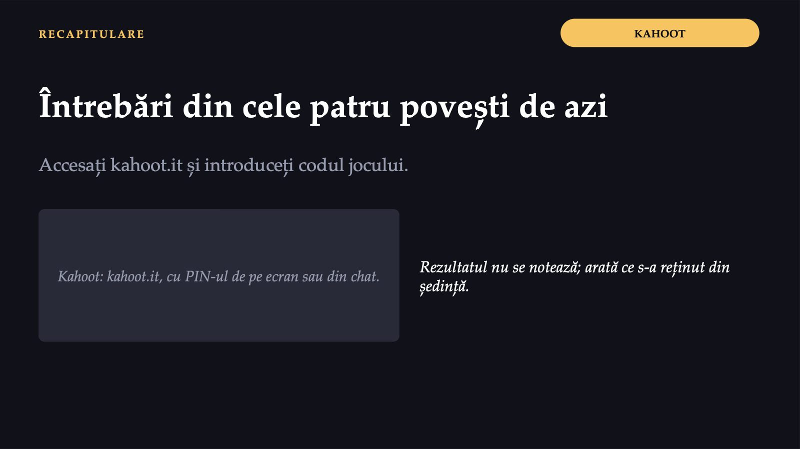
42 / 44Recapitulăm cu Kahoot: opt întrebări despre cele patru povești de azi, câte douăzeci de secunde fiecare. Intrați pe kahoot.it cu PIN-ul de pe ecran; îl găsiți și în chat. Dacă urmăriți ședința pe același ecran, deschideți Kahoot într-o fereastră alăturată sau pe telefon. Rezultatul nu se notează; arată ce s-a reținut. După fiecare întrebare discutăm răspunsul.
Ce faceți diferit de mâine
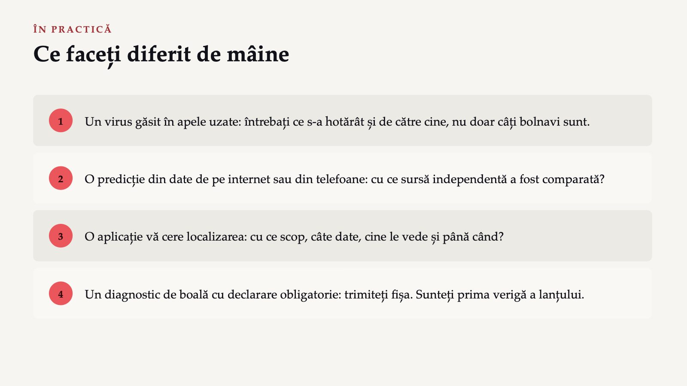
43 / 44Patru lucruri pe care le puteți face diferit de mâine. Când citiți că un virus a fost găsit în apele uzate, întrebați ce s-a hotărât și de către cine, nu doar câți bolnavi sunt. Când vedeți o predicție calculată din date de pe internet sau din telefoane, întrebați cu ce sursă independentă a fost comparată. Când o aplicație vă cere localizarea, întrebați-vă cu ce scop, câte date, cine le vede și până când. Iar când veți pune un diagnostic de boală cu declarare obligatorie, trimiteți fișa de declarare. Dacă vedeți mai multe cazuri legate între ele, întrebați direcția de sănătate publică a județului ce procedură se aplică. Sunteți prima verigă a lanțului.
Biletul de ieșire
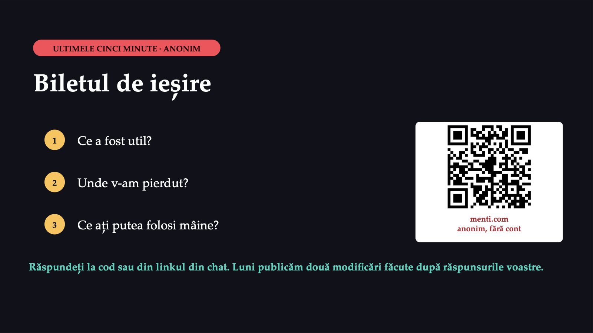
44 / 44Ultimul pas: biletul de ieșire, anonim, cu trei întrebări deschise. Ce a fost util? Unde v-am pierdut? Ce ați putea folosi mâine? Răspundeți la codul de pe ecran sau din linkul din chat. Răspunsurile voastre schimbă ședințele următoare: publicăm două modificări făcute după ele. Vă mulțumesc.
Săgeți sau spațiu: navigare · O: vedere de ansamblu · N: notele prezentatorului · F: ecran complet · Esc: închidere